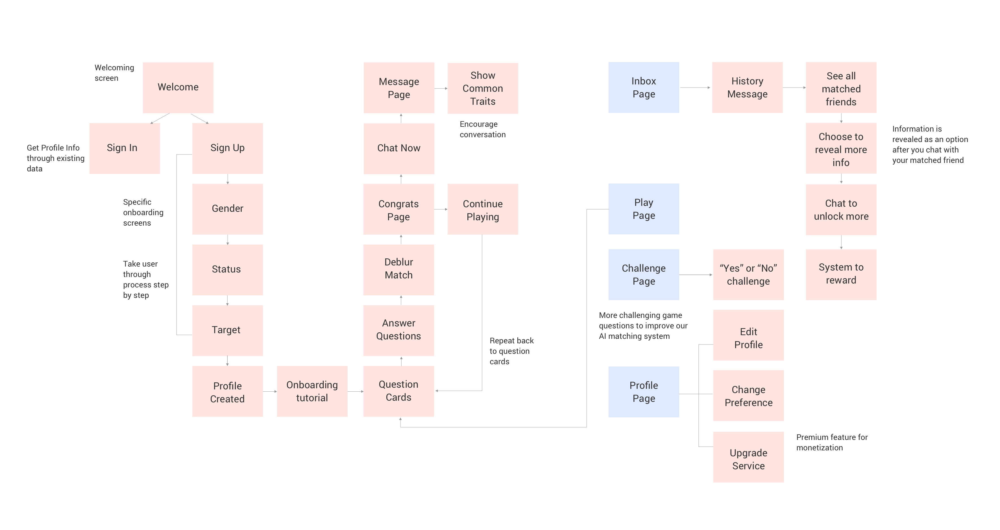
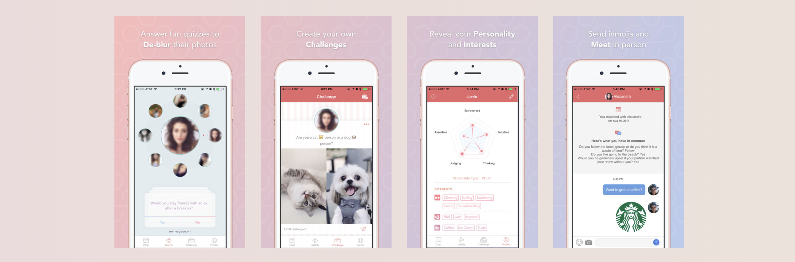
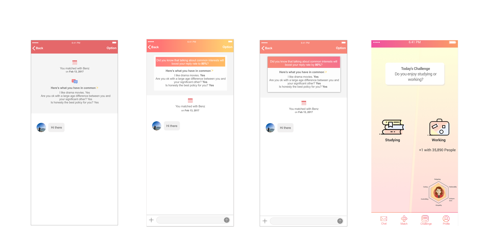
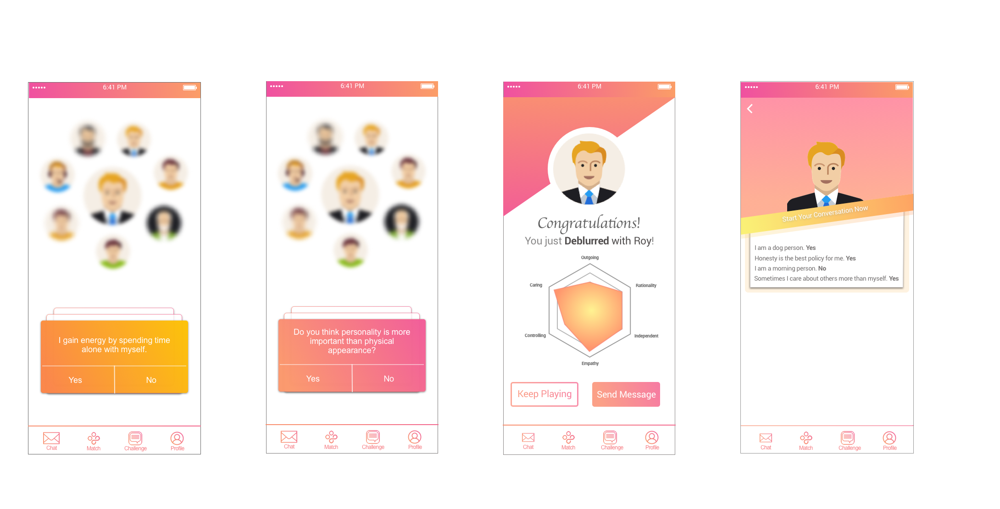

Blur is a new social app that redefines how you chat, meet and date by showcasing your personalities, interests and lifestyle before anything else.
If you’re tired of appearance-driven social apps, this new app that blurs your match’s face might be just for you. Blur is a new dating and friendship app which blurs out your match's face until you strike up a conversation
The welcome page uses vibrant color and micro-interactions to make users feel soothing and relaxed.
Unlike other apps which simply swipes left and right, Blur provides a range of profiles users can be matched with from the Matching Wheel.
Blur uses Machine Learning and pair you with your personality. All matches' faces will be blurred until you answer all the questions.
When there is a match, users will see their match's personality diagnosis paired with a fun animation. Users will see the caring, independent, controlling levels and more aspects to explore.
Regardless of how busy we are with work, school, or life, we might feel lonely sometime at some point and we just need someone to talk to. With today’s social or dating applications which take milliseconds to swipe and find matches, it has become easy to find quick matches, but . People come with strong intention or purpose, and it is hard to find someone who matches with your thoughts and who you can truly talk to.
People often say “the dating apps have killed romance”. It takes milliseconds to swipe right. You don’t have much time to think through before you make a decision.
Blur is a new social platform to find, chat and connect by showcasing your personality and interests before anything else. Finding a match is as fun as playing a game on Blur - the photos of your potential matches are initially blurred, as you answer short and fun quiz questions, they become clear
It’s personality first By answering simple & fun questions, you’ll meet interesting people and not make snap judgements based on a single profile photo.
Privacy is vital Profile photos are blurred and only revealed to people that share the same value and interests.
Make better matches Backed by advanced machine learning algorithms, Blur builds a comprehensive profile that makes better recommendations that fit you.
As users enjoy answering fun questions to de-blur their matches, Blur is simultaneously building comprehensive profiles for them, so the more they play the better matches become.
As the only designer on the startup team, I took a lot of responsibilities for all visual aspects. As past paced as a startup can be, I was in charge of wireframing, prototyping, user testing on each prototype at different stages, working with engineers to meet app updates, and assisting with any design-related visual needs for other purposes.
For the first version of the design, our team decided to use light pink and blue; nevertheless, some users reflected that the design wasn't engagine enough to capture their attention. There are too many social apps that are competing for the same user group.
Here comes the problem : How can we make ourselves stand out from other similar social apps?
We need to break the traditional flat design like other apps do and add more fun animated elements. Our design needs to be visually appealing but also simple and user friendly.

For onboarding screen, my design philosophy is to create simple yet fun design to quickly collect users' information to fasten the onboarding process. Users can click in sign in to access other partners to fill out information, or they could simply answer a short series of questions with animation.
Since we are personality based social app, we also encourage users to meet like minded friends based on our intervention. We understand the needs that sometimes users just need someone to talk to. Therefore, they will be paired with people who have similar purposes.
We did interviews users in four different age groups 18-28, 28-38, 38-48, and 48 above about their attitudes toward existing social apps. We identified that some of them don't use social apps because they don't like people with strong intention from existing social apps. They prefer to take time and develop stronger bonding relationships not only just for dating purposes.
Therefore, we wanted to design the app making the app intention clear for both parties at the beginning. If a user is not single, we will automatically pair this user with the friend's pool
In order to make the process even more fun, users will see eight blurred profile photots in front of them when they answer questions. The profile wheel will keep spinning until the user answers enough questions for our AI system to match him or her with the other user in our system who has best match.

During my time designing at Blur as a new startup, I learned to combine my business knowledge with design and adapt to this fast-paced environment. Most importantly, I learned how to take on ownership responsibility on tasks I was assigned because I knew how much my decision would affect the team and the company.
For future iterations, I would love to explore more on how to make Blur more fun and personal for users. Currently, we focus a lot on matching users together based on their personality. In the future, I would love to focus more on building stronger relationship between matches after they connect. To keep users coming back, I would love the possibility to explore community aspect. If we could use AI and Maching Learning to build a community for people with shared personality or interests, then users would be more likely to stay on the app. Furthermore, I would love to explore possibilities of creating more fun "deblur" games other than answering questions.
Thanks for reading about Blur. If you are interested in the project, I am happy to share more about it.